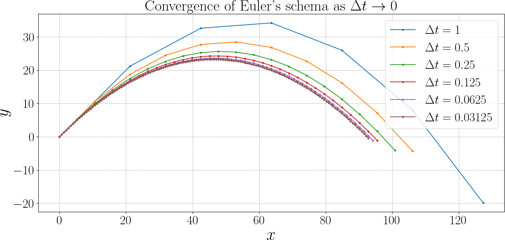
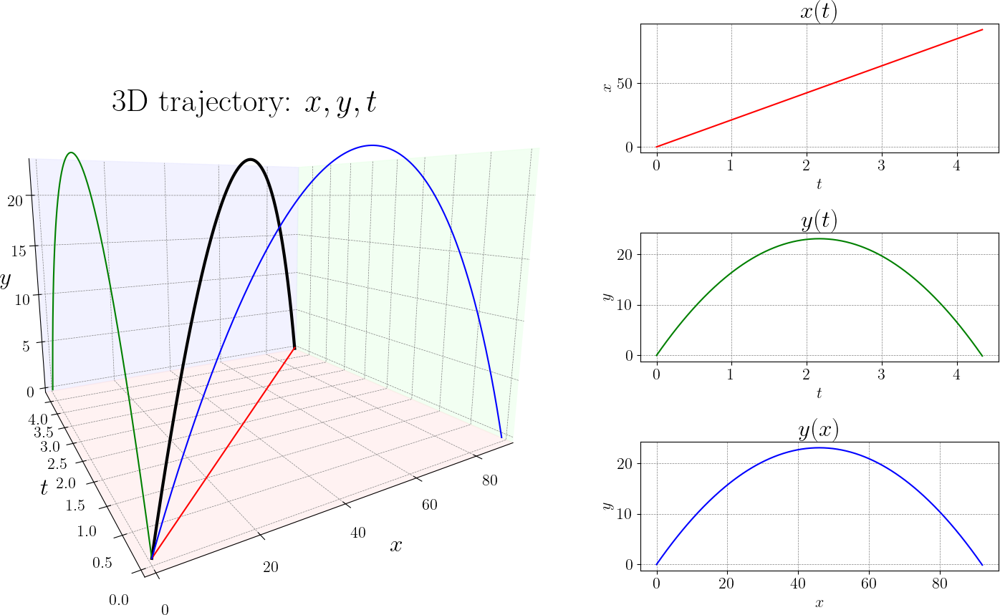

The Ape Buys a Better Watch
Euler integration scheme
We have a projectile starting at \((x_0, y_0) = (0,0)\), with initial velocity \((v_{x,0}, v_{y,0})\), under constant gravity \(g\) acting downward. No air resistance.
With a time step \(\Delta t\), the Euler update rules are:
Although this description is approximate, refining the time step will gradually reveal the smooth parabolic path familiar from physics.

Ground truth — discrete version
Let’s write the explicit formula for \(x_i\) and \(y_i\).
Let \(t := i \Delta t\). Then
As \(\Delta t \to 0\):
Ground truth — continuous version
Recall that our ODEs are:
We treat motion in the horizontal \(x\) and vertical \(y\) directions separately, since they are uncoupled except through the time variable. Thus, projectile trajectory is given by \((x(t), y(t))\). Let us note by \(v_x(t)\) and \(v_y(t)\) the corresponding velocity.
Here are our assumptions:
- Gravity is acting vertically, i.e. \(\frac{dv_x}{dt} = 0\) and \(\frac{dv_y}{dt} = g\) with constant \(g\), i.e. flat Earth approximation ;).
- No air resistance.
- Initial conditions: the projectile is launched from the origin at the beginning of the time: \(x(0) = 0\), \(y(0) = 0\). The launch speed is \(v_0\), and \(\theta_0\) is the launch angle w.r.t the ground. So, we can compute the initial velocity as
We can derive the motion equation from Newton's second law. As per our assumptions, the acceleration is constant:
We can integrate these once to get the velocity:
And integrate the second time to retrieve the position:
The trajectory of motion
When we write down the equations of motion for a projectile, we are in fact describing a curve in a three-dimensional space whose coordinates are time and position. Each state of the system is a point \((t, x, y)\), and the differential equation tells us how this point moves as time increases. From this point of view, the solution of the ODE is not directly a curve in the plane, but a space curve parameterized by time. By projecting this curve onto the \((t,x)\) and \((t,y)\) planes, we obtain the two functions \(x(t)\) and \(y(t)\), which describe how the horizontal and vertical positions evolve in time. Most of the time, however, we visualize motion by eliminating time altogether and plotting \(y\) as a function of \(x\). This \((x,y)\) plot is only a projection of the full trajectory, and it hides the role of time. It is therefore important to keep the axes in mind: a graph of \(y\) versus \(t\) does not tell the same story as a graph of \(y\) versus \(x\), even though both come from the same underlying motion.

Deliverables
- Overlaid trajectories \(y(x)\) for different \(\Delta t\)
- Short explanation of observed convergence
- Table of \((t,x,y)\)
- Plot of \(x(t)\), \(y(t)\) and the trajectory in the \((x,y)\) plane